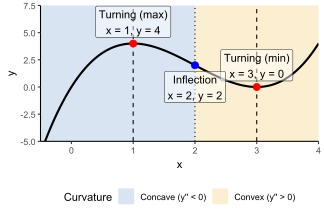
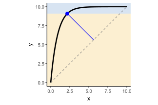
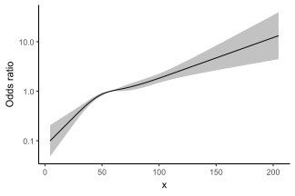

Load packages
library(tidyverse)
library(ggsci)
library(rms)
library(segmented)library(tidyverse)
library(ggsci)
library(rms)
library(segmented)Papers mentioning “inflection point” often mean one of 4 different things:
Let use \(y = x^3 - 6x^2 + 9x\) as an example:
## Define the function
y_fun <- function(x) x^3 - 6 * x^2 + 9 * x
# Exact, analytic points
turn_df <- tibble(
name = c("Turning (max)", "Turning (min)"),
x = c(1, 3),
y = y_fun(x)
)
infl_df <- tibble(name = "Inflection", x = 2, y = y_fun(x))
# Curve to plot
df <- tibble(x = seq(-0.5, 4, length.out = 400)) |>
mutate(y = y_fun(x))
# Full-height background bands for concavity
ymin <- -5
ymax <- 7.5
shades <- tibble(
xmin = c(-Inf, 2),
xmax = c(2, Inf),
ymin = ymin,
ymax = ymax,
curvature = c("Concave (y'' < 0)", "Convex (y'' > 0)")
)
# Plot
ggplot(df, aes(x, y)) +
geom_rect(
data = shades,
aes(
xmin = xmin,
xmax = xmax,
ymin = ymin,
ymax = ymax,
fill = curvature
),
alpha = 0.18,
inherit.aes = FALSE
) +
geom_line(linewidth = 1) +
## Turning points
geom_vline(data = turn_df, aes(xintercept = x), linetype = "dashed") +
geom_point(data = turn_df,
aes(x, y),
colour = "red",
size = 3) +
geom_label(
data = turn_df,
aes(x, y, label = paste0(name, "\nx = ", x, ", y = ", y)),
fill = "white",
label.size = 0.2,
nudge_y = 2,
alpha = 0.5
) +
## Inflection point
geom_vline(data = infl_df, aes(xintercept = x), linetype = "dotted") +
geom_point(data = infl_df,
aes(x, y),
colour = "blue",
size = 3) +
geom_label(
data = infl_df,
aes(x, y, label = paste0(name, "\nx = ", x, ", y = ", y)),
fill = "white",
label.size = 0.2,
nudge_y = -2,
alpha = 0.5
) +
coord_cartesian(ylim = c(ymin, ymax), expand = 0) +
scale_fill_bmj() +
labs(fill = "Curvature") +
theme_classic() +
theme(legend.position = "bottom")
# ---- finite differences that work with uneven x ----
.fd <- function(x, y) {
stopifnot(length(x) == length(y), length(x) >= 3)
o <- order(x); x <- x[o]; y <- y[o]
# first derivative at interior points (central difference)
d1 <- (y[3:length(y)] - y[1:(length(y)-2)]) /
(x[3:length(x)] - x[1:(length(x)-2)])
x1 <- x[2:(length(x)-1)]
# second derivative at interior points (difference of forward slopes)
slope <- (y[-1] - y[-length(y)]) / (x[-1] - x[-length(x)]) # at midpoints
d2 <- 2 / (x[3:length(x)] - x[1:(length(x)-2)]) *
(slope[2:length(slope)] - slope[1:(length(slope)-1)])
x2 <- x[2:(length(x)-1)]
list(x = x, y = y, d1 = d1, x1 = x1, d2 = d2, x2 = x2)
}
# ---- zero crossing with linear interpolation ----
.zero_cross <- function(x, y, eps = 1e-10) {
s <- sign(replace(y, abs(y) < eps, 0))
i <- which(s[-length(s)] * s[-1] < 0) # sign flip between i and i+1
if (!length(i)) return(numeric(0))
x[i] - y[i] * (x[i+1] - x[i]) / (y[i+1] - y[i]) # linear root between the pair
}
# ---- main finders ----
find_inflection <- function(x, y, eps = 1e-10) {
fd <- .fd(x, y)
xi <- .zero_cross(fd$x2, fd$d2, eps) # where y'' changes sign
tibble(x = xi, y = approx(fd$x, fd$y, xi)$y)
}
find_turning <- function(x, y, eps = 1e-10) {
fd <- .fd(x, y)
xt <- .zero_cross(fd$x1, fd$d1, eps) # where y' changes sign
# classify with the sign of y'' at the same x (interpolated)
d2_at_xt <- approx(fd$x2, fd$d2, xt)$y
tibble(x = xt, y = approx(fd$x, fd$y, xt)$y,
type = ifelse(d2_at_xt < 0, "max", "min"))
}Let’s try it
find_inflection(df$x, df$y)find_turning(df$x, df$y)Use pathviewr::find_curve_elbow() to find the elbow. For comparison, we can also compute it manually by measuring the maximum distance from the curve to the straight line connecting the first and last observations.
x <- seq(0, 10, length.out = 300)
y <- 10 * (1 - exp(-1.1 * x))
df <- tibble(x, y)
# The imaginary straight line between the first and final observation
x1 <- df$x[1]
y1 <- df$y[1]
x2 <- df$x[nrow(df)]
y2 <- df$y[nrow(df)]
# Find the distance
den <- sqrt((y2 - y1)^2 + (x2 - x1)^2)
dist_to_chord <- abs((y2 - y1)*df$x - (x2 - x1)*df$y + x2*y1 - y2*x1) / den
our_idx <- which.max(dist_to_chord)
our_pt <- df[our_idx, ]
colnames(our_pt) <- paste0(colnames(our_pt), "_our")
our_d <- dist_to_chord[our_idx]
# Elbow via pathviewr
pv_idx <- pathviewr::find_curve_elbow(df, export_type = "row_num")
pv_pt <- df[pv_idx, ]
colnames(pv_pt) <- paste0(colnames(pv_pt), "_pv")
cbind(our_pt, pv_pt)Now let’s visualise our elbow.
## Foot of the perpendicular from the elbow to the chord
project_point_to_line <- function(px, py, x1, y1, x2, y2) {
t <- ((px - x1) * (x2 - x1) + (py - y1) * (y2 - y1)) / ((x2 - x1)^2 + (y2 - y1)^2)
tibble(x = x1 + t * (x2 - x1), y = y1 + t * (y2 - y1))
}
foot <- project_point_to_line(our_pt$x_our, our_pt$y_our, x1, y1, x2, y2)
mid <- tibble(x = (our_pt$x_our + foot$x) / 2,
y = (our_pt$y_our + foot$y) / 2)
ymin <- min(df$y) - 0.5
ymax <- max(df$y) + 0.5
y_star <- our_pt$y_our
shades <- tibble::tibble(
xmin = -Inf, xmax = Inf,
ymin = c(ymin, y_star),
ymax = c(y_star, ymax),
band = c("Below elbow", "Above elbow")
)
## Plot
ggplot(df, aes(x, y)) +
# background shading (two horizontal bands)
geom_rect(
data = shades,
aes(xmin = xmin, xmax = xmax, ymin = ymin, ymax = ymax, fill = band),
alpha = 0.18, inherit.aes = FALSE
) +
geom_line(linewidth = 1.2) +
# chord (end-to-end straight line)
annotate(
"segment",
x = x1,
y = y1,
xend = x2,
yend = y2,
linetype = "dashed",
colour = "grey50"
) +
# our elbow + perpendicular
geom_point(
data = our_pt,
aes(x_our, y_our),
colour = "blue",
size = 3
) +
annotate(
"segment",
x = our_pt$x_our,
y = our_pt$y_our,
xend = foot$x,
yend = foot$y,
colour = "blue"
) +
scale_y_continuous(expand = c(0, 0)) +
scale_fill_bmj() +
coord_fixed(ratio = 1) +
theme_classic(base_size = 12) +
theme(legend.position = "none")
We will simulating some data where the effect of \(x\) on the outcome \(y\) changes slope after a certain point (let choose that point \(x_0 = 45\) here).
set.seed(123)
n <- 2000
x <- pmin(rgamma(n, shape = 5, rate = 0.08), 250) # skewed, realistic range
eta <- -3 + 0.059 * pmin(x, 45) + 0.014 * pmax(x - 45, 0)
p <- plogis(eta)
y <- rbinom(n, 1, p)
dat <- tibble(x, y)First, we check for non-linearity by fitting both a simple logistic model and a restricted cubic spline, and then compare them with a likelihood ratio test.
m_lin <- glm(y ~ x, family = binomial, data = dat)
m_rcs <- glm(y ~ rcs(x, 4), family = binomial, data = dat)
anova(m_lin, m_rcs, test = "LRT")For convenience when computing the odds ratio, we will fit the model using rms::lrm().
dd <- datadist(dat)
options(datadist='dd')
m_rcs2 <- lrm(y ~ rcs(x, 4), data = dat)
# Make sure that this model is the same as the model we fit with glm
m_rcs
Call: glm(formula = y ~ rcs(x, 4), family = binomial, data = dat)
Coefficients:
(Intercept) rcs(x, 4)x rcs(x, 4)x' rcs(x, 4)x''
-2.76208 0.05324 -0.10983 0.27566
Degrees of Freedom: 1999 Total (i.e. Null); 1996 Residual
Null Deviance: 2733
Residual Deviance: 2575 AIC: 2583m_rcs2Logistic Regression Model
lrm(formula = y ~ rcs(x, 4), data = dat)
Model Likelihood Discrimination Rank Discrim.
Ratio Test Indexes Indexes
Obs 2000 LR chi2 158.48 R2 0.102 C 0.653
0 1140 d.f. 3 R2(3,2000)0.075 Dxy 0.307
1 860 Pr(> chi2) <0.0001 R2(3,1470.6)0.100 gamma 0.307
max |deriv| 1e-06 Brier 0.227 tau-a 0.151
Coef S.E. Wald Z Pr(>|Z|)
Intercept -2.7621 0.3821 -7.23 <0.0001
x 0.0532 0.0102 5.23 <0.0001
x' -0.1098 0.0394 -2.79 0.0053
x'' 0.2757 0.1109 2.49 0.0129 Let’s visualise it.
pred <- Predict(m_rcs2, x = seq(min(dat$x), max(dat$x), length.out = 1000), ref.zero = T, fun = exp, conf.int = 0.95)
ggplot() +
geom_line(data = pred, aes(x = x, y = yhat)) +
geom_ribbon(data = pred, aes(x = x, y = yhat, ymin = lower, ymax = upper), alpha = 0.3) +
scale_y_log10() +
labs(y = "y") +
theme_classic()
Now to formally identify the breakpoint (sometimes referred to as an “inflection point”), we fit a segmented regression model using segmented::segmented() function on the logistic model.
m_seg <- segmented::segmented(m_lin, seg.Z = ~ x)
summary(m_seg)
***Regression Model with Segmented Relationship(s)***
Call:
segmented.glm(obj = m_lin, seg.Z = ~x)
Estimated Break-Point(s):
Est. St.Err
psi1.x 42.017 4.29
Coefficients of the linear terms:
Estimate Std. Error z value Pr(>|z|)
(Intercept) -3.01495 0.49340 -6.111 9.93e-10 ***
x 0.05994 0.01467 4.085 4.41e-05 ***
U1.x -0.04432 0.01486 -2.984 NA
---
Signif. codes: 0 '***' 0.001 '**' 0.01 '*' 0.05 '.' 0.1 ' ' 1
(Dispersion parameter for binomial family taken to be 1)
Null deviance: 2733.3 on 1999 degrees of freedom
Residual deviance: 2571.1 on 1996 degrees of freedom
AIC: 2579.1
Boot restarting based on 7 samples. Last fit:
Convergence attained in 1 iterations (rel. change 1.2537e-09)The breakpoint is estimated at 42.017. We can also get the confidence interval.
confint(m_seg, parm = "x", level = 0.95) Est. CI(95%).low CI(95%).up
psi1.x 42.0165 33.6024 50.4306Let’s have a look at the slopes.
segmented::slope(m_seg)$x
Est. St.Err. t value CI(95%).l CI(95%).u
slope1 0.059937 0.0146720 4.0850 0.031180 0.088695
slope2 0.015613 0.0023258 6.7129 0.011054 0.020171Translate the slopes into ORs.
sl <- data.frame(segmented::slope(m_seg)$x) |>
janitor::clean_names()
# (optional) grab the estimated breakpoint to label rows nicely
bp <- as.numeric(summary(m_seg)$psi[ , grep("^Est", colnames(summary(m_seg)$psi), ignore.case = TRUE)[1]])
sl |>
rownames_to_column("segment") |>
mutate(
segment = if (nrow(sl) == 2)
c(paste0("x \u2264 ", round(bp, 1)), paste0("x > ", round(bp, 1)))
else segment, # works for >1 breakpoints too
OR = exp(est),
CI_low = exp(ci_95_l),
CI_high = exp(ci_95_u),
p.value = 2 * pnorm(abs(t_value), lower.tail = FALSE)
) |>
dplyr::select(segment, OR, CI_low, CI_high, p.value)